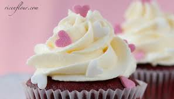

A cupcake (also known as a fairy cake) is a small cake designed to be eaten by one person,baked in a thin paper wrapper,and decorated with frosting on top
One of the mainstays at coffee & cake is our famous Red Velvet Cupcake.A well-guarded recipe combined with the natural ingredients make this little red rascal unapologyetically delicious.Topped with decorative vanilla frosting the Red Velvet Cupcake is a favorite among kids as well.